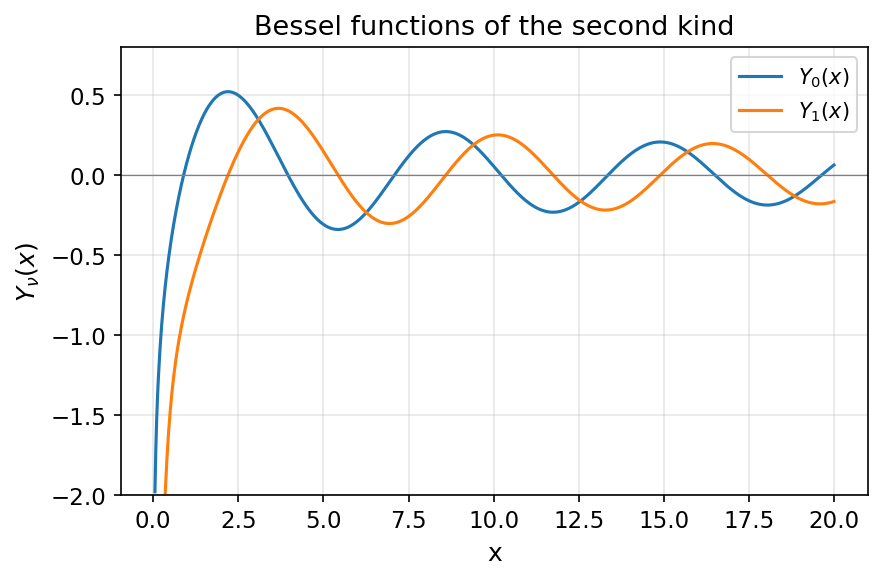
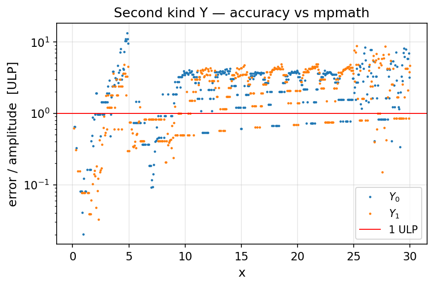

- Generated by
 1.13.2
1.13.2
|
fortran-bessels
Fast, accurate Bessel functions in pure modern Fortran
|
The functions \( Y_0(x) \), \( Y_1(x) \), and \( Y_\nu(x) \) are the second, linearly independent solutions of Bessel's equation
\[ x^2 \frac{d^2 y}{dx^2} + x \frac{dy}{dx} + (x^2 - \nu^2)\, y = 0, \]
singular at the origin. They are related to the first kind by
\[ Y_\nu(x) = \frac{J_\nu(x)\cos(\nu\pi) - J_{-\nu}(x)}{\sin(\nu\pi)}, \]
and share the large- \( x \) asymptotic \( Y_\nu(x) \sim \sqrt{2/(\pi x)}\,\sin\!\left(x - \nu\pi/2 - \pi/4\right) \).

| \( x \) | \( Y_0(x) \) / \( Y_1(x) \) |
|---|---|
| \( x < 0 \) | NaN (undefined for real \( x<0 \)) |
| \( x \to 0^+ \) | \( -\infty \) (returned as -huge(BK)) |
| \( +\infty \) | \( 0 \) |
bessely(nu, x) is validated for integer order \( \nu \) only. Non-integer \( \nu \) currently routes through variable-order paths with known port bugs (power-series argument swap, Chebyshev mapping, hankel_debye complex output) and will return incorrect values. See roadmap item 07.bessely0/bessely1 use rational approximations on \( x \le 5 \) (with the \( (2/\pi)\log x \, J_\nu(x) \) correction term), Hankel phase/amplitude forms on the middle range, and a sine asymptotic for large \( x \). They run roughly 2× faster than the gfortran intrinsics bessel_y0/bessel_y1 while matching them to a few ULP. The accuracy plot below is scoped to \( Y_0 \) / \( Y_1 \):
